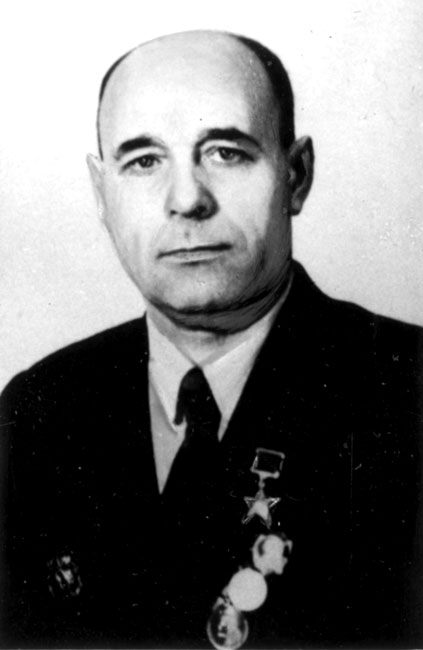
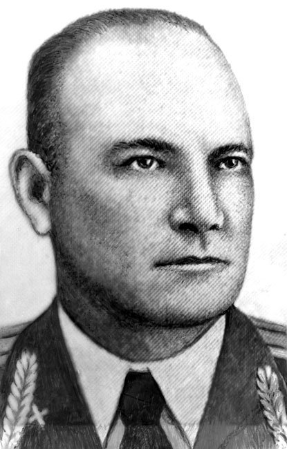
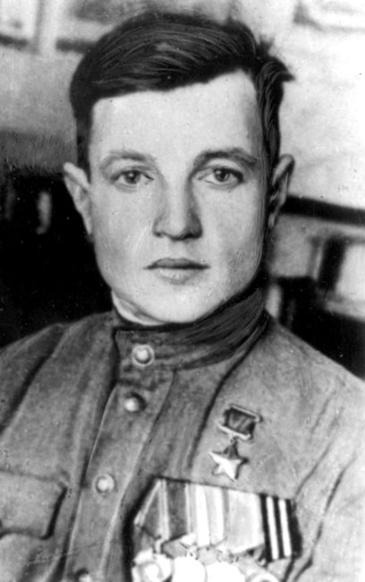
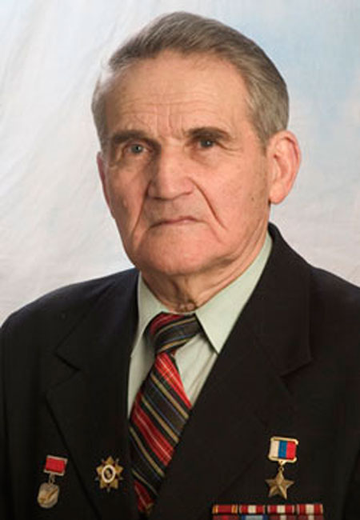

Александр Филиппович Фролов

Родился 23 ноября 1918 г. в уездном г. Пронске Рязанской губ. (ныне р.п. и центр р-на) в семье служащего. Жил в г. Ленинграде. Окончил 10 классов школы N 13. Работал лаборантом на заводе «Выдвиженец». В 1938 г. призван в Красную Армию. В 1940 г. окончил Челябинское военное авиац. училище штурманов. Член ВКП(б) с 1942 г.
В действующей армии – с 26 июня 1941 г. Штурман самолета, затем штурман звена, штурман эскадрильи. 5-й гв. Севастопольский бомбардировочный авиац. полк (50-я авиац. дивизия, АДД), в котором служил Фролов, участвовал в обороне Ленинграда, Кавказа, Крыма, Сталинграда и других городов, бомбил объекты противника в городах Хельсинки, Данциге, Кенигсберге, Варшаве, Праге, Будапеште, Бреслау и Берлине. В июле 1941 г. во время бомбардировки скопления танков и живой силы противника в районе г. Новоград-Волынского (Украина) в один из моторов самолета Фролова попал снаряд, но экипаж сумел посадить изрешеченный осколками самолет на своей территории. К сентябрю 1942 г. гв. ст. лейтенант Фролов совершил 164 боевых вылета на бомбардировку военных объектов, живой силы и техники врага. Уничтожил 14 самолетов на земле и 4 в воздушных боях, 34 танка, 68 автомашин с войсками и грузами , 14 ж.-д. вагонов, 1 переправу, 4 склада с горючим, 6 - с боеприпасами. Из наградного листа: «Тов. Фролов является лучшим штурманом в полку по самолетовождению в сложных метеоусловиях... его посылают на выполнение самых ответственных и трудных задач в сложных метеоусловиях днем и ночью... Всего совершил 340 боевых вылетов на бомбардирование различных объектов противника». Звание Героя Советского Союза присвоено 31 декабря 1942 г.
После войны продолжал службу в ВВС. В 1950 г. окончил Высшую военную летно-тактическую школу командиров частей, служил на командных должностях. С 1959 г. полковник Фролов – в запасе. Жил в г. Днепропетровске (Украина). Награжден орденом Ленина, 3 орденами Красного Знамени, 2 орденами Отечественной войны 1-й степ., орденом Красной Звезды, медалями.
Дмитрий Ильич Родин

Родился 21 июня 1912 г. в Ново-Стрелецкой Слободе г. Пронска Рязанской губ. (ныне в черте р.п. Пронска – центра р-на). Окончил 6 классов, работал в колхозе. В 1932 г. переехал в Москву, работал слесарем в трамвайном тресте. В 1935 г. вступил в ряды ВКП(б).
С 1935 по 1938 г. Родин служил в рядах Красной Армии на границе. После окончания срочной службы вернулся в Москву, работал на прежнем месте.
В июне 1941 г. добровольцем вступил в ряды Московской особой дивизии народного ополчения. Призван в ряды Красной Армии Пронским РВК Рязанской обл. 15 октября 1941 г. С февраля 1942 г. и до конца Великой Отечественной войны сражался на Ленинградском, Юго-Западном, 1-м и 3-м Украинских, 1-м Белорусском фронтах. Участник форсирования многих водных преград. В 1942 г. при форсировании р. Ловать (Новгородская обл.) был впервые ранен. После госпиталя окончил 3-месячные курсы командиров взводов и был направлен на 1-й Украинский фронт.
Отличился в наступательных боях 1944 г. Освобождая г. Одессу в апреле 1944 г., взвод Родина одним из первых ворвался в город, командир лично уничтожил около 30 солдат и офицеров противника. 20 июля 1944 г. командир стр. взвода 170-го гв. стр. полка ( 57-я гв. Новобугская ордена Богдана Хмельницкого стр. дивизия, 8-я гв. армия, 1-й Белорусский фронт), гв. мл. лейтенант Родин со своими бойцами под ураганным огнем противника переправился через р. Западный Буг западнее г. Любомль (Волынская обл.) и захватил плацдарм. Его взвод первым ворвался в траншеи врага, истребил в рукопашной схватке более 15 гитлеровцев.
Столь же успешно действовал взвод и 1 августа 1944 г. при форсировании р. Вислы у г. Магнушев (Польша). Переправился со взводом через реку, с хода принял боевой порядок и повел взвод на штурм переднего края обороны противника. Ворвавшись в траншеи противника, его взвод подавил огонь 5 пулеметных точек, истребив до 15 гитлеровцев.
Д.И. Родин 6 раз был ранен, но всегда возвращался в строй.
Звание Героя Советского Союза присвоено 24 марта 1945 г.
После войны офицер запаса Родин жил и работал в Москве слесарем, а затем в отделе снабжения института Трансэлектропроекта Министерства путей сообщения. Награжден орденами Ленина, Александра Невского, Отечественной войны 1-й степ., медалями.
Иван Иванович Щербаков

Родился 29 декабря 1915 г. в д. Ивашково Скопинского у. Рязанской губ. (ныне Пронский р-н) в семье крестьянина. Окончил 5 классов сельской школы, с 6 по 8 класс учился в Пронской школе. В 1932 г. переехал в г. Москву, окончил школу ФЗУ при авиац. заводе. Работал слесарем. Одновременно занимался парашютным спортом, получил звание «Мастер парашютного спорта». В 1937 г. окончил центральный аэроклуб им. В.П. Чкалова, работал летчиком-инструктором на аэродроме под Москвой, затем – командиром отряда Ленинградского районного аэроклуба г. Москвы. Среди его учениц были М.П. Чечнева и О. Шахова, ставшие впоследствии Героями Советского Союза. В 1940 г. призван в Красную Армию, в том же году окончил Ярославскую военную авиац. школу пилотов. В звании лейтенанта был направлен командиром отряда в школу пилотов г. Вязники Владимирской обл. С начала войны готовил летчиков для фронта. Член ВКП(б) с 1944 г. На фронтах Великой Отечественной войны – с 20 января 1944 г., воевал в составе 176-го гв. Проскуровского Краснознаменного ордена Александра Невского истребительного авиац. полка (265-я истребительная авиац. дивизия, 16-я воздушная армия) на 1-м Украинском, 3-м Прибалтийском, 1-м Белорусском фронтах. Прошел путь от ст. летчика до командира эскадрильи. Был ведомым дважды Героя Советского Союза И.Н. Кожедуба. В 1-м же бою Щербаков сбил 2 самолета противника. Гв. капитан Щербаков участвовал в наступательных боях на Житомирском, Варшавском, Берлинском направлениях. Из наградного листа: «Обладая высокими летными качествами, техникой пилотирования, грамотно используя летно-такические данные самолета Ла-5 и Ла-7, в воздушных боях всегда выходит победителем... за период с 20 января 1944 г. по 1 мая 1945 г. тов. Щербаков произвел 123 успешных боевых вылета на свободную охоту. Участвовал в 20 воздушных боях, в которых лично сбил 15 самолетов противника: 3 Ме-109, 10 ФВ-190, 2 ФВ-189». Свой 15-й самолет Щербаков сбил в небе над Берлином за несколько дней до Победы. Звание Героя Советского Союза присвоено 15 мая 1946 г.
После войны продолжал службу в ВВС, был командиром авиац. полка в советских частях в ГДР, Австрии, затем служил на Украине. С 1957 г. полковник Щербаков – в запасе. Жил в г. Кременчуг Полтавской обл. (Украина). Награжден орденом Ленина, 2 орденами Красного Знамени, орденом Александра Невского, 2 орденами Красной Звезды, медалями.
Умер 4 декабря 1960 г., похоронен на Новодевичьем кладбище г. Москвы. На здании бывшей гимназии в г. Пронске, где размещаются Пронская центральная районная библиотека и Пронский народный краеведческий музей, установлена мемориальная доска с надписью «Здесь учился И.И. Щербаков – Герой Советского Союза». В мае 2000 г. и апреле 2008 г. в г. Новомичуринске проводился областной юношеский турнир по греко-римской борьбе, посвященный его памяти.
Василий Филиппович Кузьмичев

"Родился 10 февраля 1913 г. в с. Красное Пронского у. Рязанской губ. (ныне Пронский р-н) в семье крестьянина. В 1926 г. окончил 4 класса сельской школы. До 1932 г. жил и работал в родном селе. После переезда в г. Москву работал слесарем на Московском автомобильном заводе (ныне ЗИЛ им. Лихачева).
В 1942 г. призван в Красную Армию. В боях Великой Отечественной войны - с ноября 1942 г., воевал на Юго-Западном, 1-м Украинском фронтах. В 1943 г. дважды был тяжело ранен. Командир отделения взвода пешей разведки 646-го стр. полка (152-я стр. дивизия, 46-я армия, 3-й Украинский фронт) сержант Кузьмичев в ночь на 22 октября 1943 г. при переправе через р. Днепр у г. Днепропетровска (Украина) отвлек огонь противника на себя и дал возможность частям полка форсировать реку без больших потер. Из наградного листа: "...Сержант Кузьмичев с отделением разведчиков под сильным огнем противника смело переправлялись на правый берег р. Днепр. В середине реки лодку опрокинуло снарядом, но сержант Кузьмичев и его бойцы при помощи заранее приготовленных мешков и обломков лодки вплавь добрались с вооружением на правый берег реки и с хода присоединились к нашему подразделению и пошли в атаку. Отделение сержанта Кузьмичева, прокладывая себе путь огнем и гранатами, безостановочно продвигалось вперед. Но противник отчаянно сопротивлялся. С целью сломить упорство противника сержант Кузьмичев уничтожил 2-х вражеских пулеметчиков, пулемет захватил и повернул его в сторону немцев и, ведя по ним огонь, не только отбил контратаку противника, но сам бросился в атаку на врага, увлекая за собой бойцов.
В одном из боев в траншее у сержанта Кузьмичева отказал автомат, немцы на него навалились. Ударом приклада сержант Кузьмичев одному немцу размозжил голову и разбил при этом приклад. У второго немца выхватил карабин и им же убил его. Смелые маневры сержанта Кузьмичева усилили темп продвижения группы. Но путь преградил станковый пулемет противника. Немцы снова перешли в контратаку. Но сержант Кузьмичев выделил группу бойцов для уничтожения пулемета, а сам с другой группой ринулся на врага. Тогда немцы пытались огнем из 75-мм орудия остановить наших бойцов. Сержант Кузьмичев вплотную подобрался к орудию, забросал гранатами его расчет и вывел из строя..."
В этом бою был тяжело ранен. Вернувшись из госпиталя, снова попал в свою часть, продолжал воевать. Форсировал реки Днестр, Дунай, освобождал Молдавию, Румынию, Югославию, Болгарию. Звание Героя Советского Союза присвоено 22 февраля 1944 г.
В мае 1946 г. Кузьмичеву присвоено звание старшины, в том же году демобилизован. Жил в г. Москве, работал на автозаводе им. Лихачева контролером ОТК. Награжден орденами Ленина, "Знак Почета", медалями.
.Умер 20 ноября 1982 г., похоронен на Калитниковском кладбище г. Москвы.
Александр Петрович Андреев

Родился 5 мая 1923 г. в с. Березово Пронского уезда Рязанской губернии (ныне Пронский район Рязанской области) в многодетной крестьянской семье. Отец, Петр Гаврилович, работал шофером, затем - председателем колхоза, погиб на фронте под Сталинградом в 1942 г. Мать, Пелагея Варламьевна, занималась домашним хозяйством, воспитывала пятерых детей. Александр Петрович в 1939 г. окончил 7 классов Березовской школы, продолжил образование в Пронской средней школе. В 1940 г. поступил в Рязанский педагогический институт (ныне Рязанский государственный университет им. С.А. Есенина (РГУ). Занимался в аэроклубе, освоил самолет По-2.
В 1941 г. призван в Красную армию и направлен в Руставскую авиационную школу (Грузинская ССР). Освоил самолет ЛаГГ-3. По окончании школы направлен на фронт. С 1 октября 1943 по 5 февраля 1945 г. Андреев – летчик-истребитель 149-го истребительного авиационного полка, затем - 163-го гвардейского истребительного авиационного полка (229-я истребительная авиационная дивизия, 4 воздушная армия). Воевал на Степном, Южном, 4-м Украинском, Прибалтийском, Ленинградском и 2-м Белорусском фронтах; участник освобождения Кубани, Таманского полуострова, Крыма, Белоруссии, Польши и Германии. Летал на самолетах ЛаГГ-3, Ла-5, Ла-7, освоил американский истребитель Р-39 («Аэрокобра»). Совершил 310 боевых вылетов, из них более 200 на разведку войск и объектов противника. Участвовал более чем в 50 воздушных боях, сбил 8 вражеских самолетов; на земле, во время штурмовок, уничтожил значительное количество техники и живой силы противника. Дважды был ранен в воздухе огнем зенитной артиллерии, получил ожоги и множественные осколочные ранения, и каждый раз, не закончив лечение, возвращался на фронт.
В послевоенный период Александр Петрович окончил Военно-воздушную академию, затем - Военную академию Генерального штаба Вооруженных сил СССР. Командовал 704-м учебным авиационным полком знаменитого Качинского авиационного военного училища, 11-й гвардейской авиационной дивизией Южной группы войск, 73-й Воздушной армией Среднеазиатского и 17-й Воздушной армией Киевского военных округов.
Указом Президента РФ № 477 от 8 мая 1995 г. «за мужество и героизм, проявленные в борьбе с немецко-фашистскими захватчиками в Великой Отечественной войне 1941-1945 г.» генерал-полковнику авиации в отставке Андрееву Александру Петровичу присвоено звание Героя Российской Федерации. Александр Петрович является председателем Совета старейшин Межрегиональной общественной организации «Клуб Героев Советского Союза, Героев Российской Федерации и полных кавалеров ордена Славы города Москвы и Московской области». Академик Международной академии духовного единства народов мира. В 2013 г. в серии «Знаменитые рязанцы» выпущена почтовая карточка с портретом Героя Российской Федерации Александра Петровича Андреева.